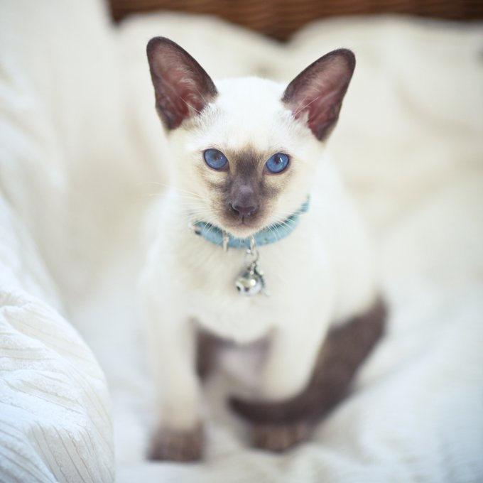

The Siamese itself is a natural breed, meaning its original pointed pattern was the result of a genetic mutation. The breed has contributed to the creation of many other breeds, including the Balinese, Oriental, the Himalayan division of the Persian, the Tonkinese and the Havana Brown.
 Back